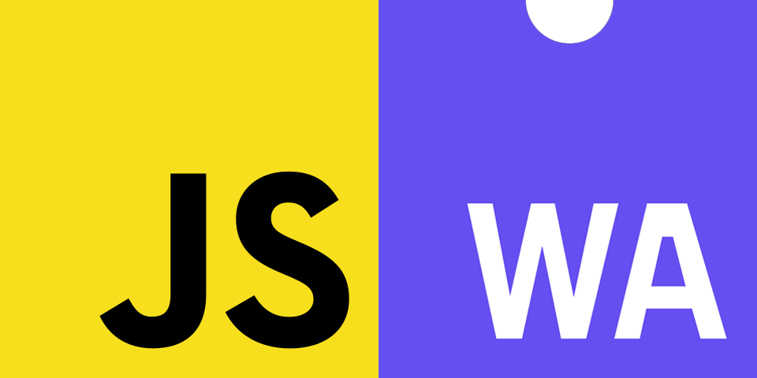
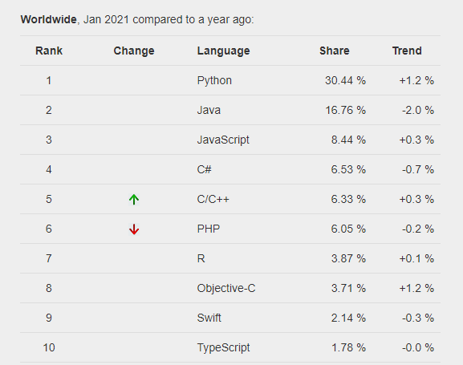
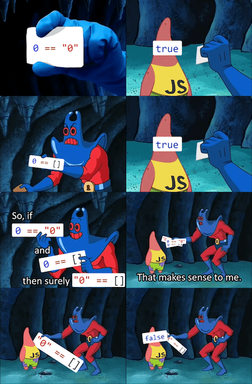
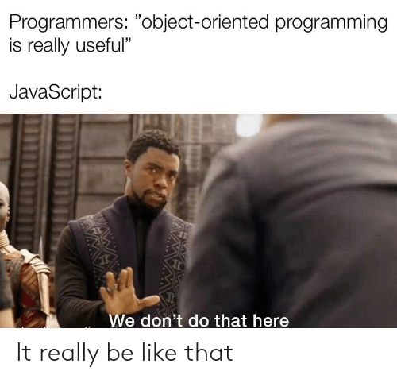

Create by Zhenya Marinovich
JS and WebAssembly
What developers can do ???
- Use JS with all its shortcomings
- Write code in another language and compile it to JS
JavaScript alternatives
PYPL Rating 2021
What is TypeScript ???
Advantages of TypeScript over JavaScript
- Strong Typing
- Improved OOP
Strong typing
Basic Types
- Number
- String
- Boolean
- Enum
- Void
- Null
- Undefined
- Any
- Never
- Array
- Tuple
Example
enum Color
{
Red,
Green,
Blue,
White,
Black
}
let car : Color = Color.Green;
OOP
Example interfaces
interface IPost
{
id: number;
text: string;
}
class Message implements IPost
{
id: number;
text: string;
senderId: number;
recieverId: number;
}
Access modifiers example
class User
{
private id: number;
private login: number;
constructor(id: number, login: number)
{
this.id = id;
this.login = login;
}
public get Login(): number
{
return this.login;
}
}
TypeScript cons: what problems it creates
- Bloated code
- Adding extra step — transpiling
- One more JavaScript to learn
- Not true static typing
Installation TypeScript
Install: npm install -g typescript
Compilation: tsc app.ts
tsconfig.json
{
"compilerOptions": {
"target": "es5",
"removeComments": true,
"outFile": "app.js"
}
}
Conclusion
TypeScript is a great wrapper that can greatly improve the productivity of your development team while maintaining compatibility with existing code. While JavaScript is not strongly typed, TypeScript is a great alternative that doesn't take a lot of time to learn.